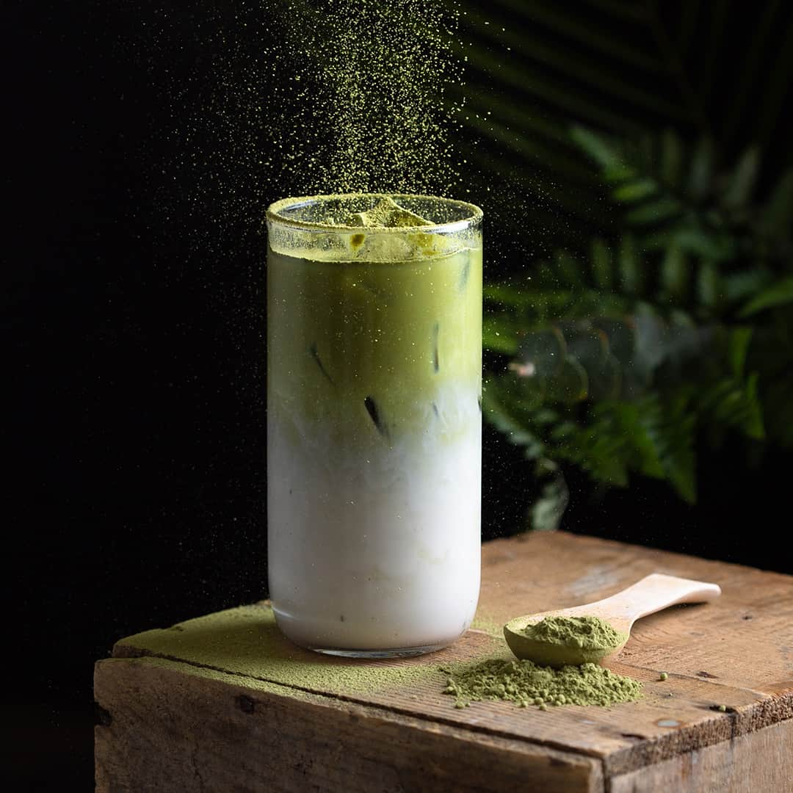

Matcha Milk latte

Description
A matcha milk latte is a creamy, frothy beverage made by combining
finely ground green tea leaves (matcha), milk (or a milk alternative),
and sometimes a sweetener, resulting in a caffeinated coffee alternative with a
vibrant green color and a slightly bitter, earthy flavor.
Ingredients
- 1 1/2 teaspoons matcha powder
- 1 tablespoon hot water
- 2 teaspoons honey, or syrup
- 3/4 cup hot milk or 1.25 cup of milk
Steps
- Gather the ingredients.
- Sift the matcha powder into a mug.
- Add the hot water and whisk until no lumps remain. Stir in the honey.
- Add the milk and either whisk to combine or use a milk frother; serve immediately.
Home